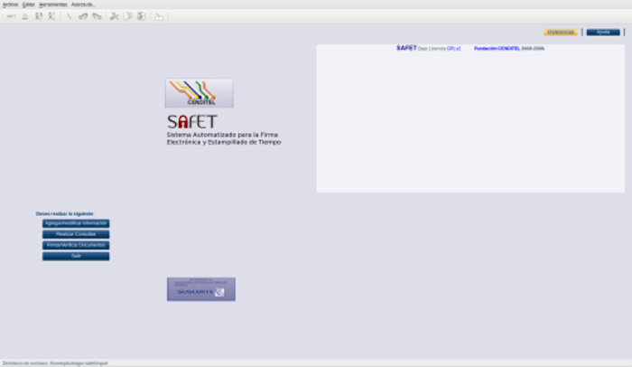
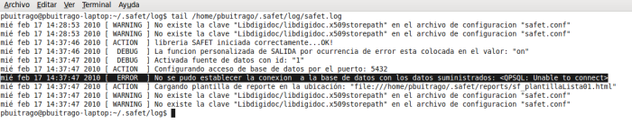
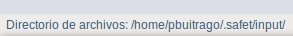
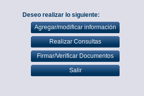

Acceso y salida de la aplicación inflow
12.1.- Acceso a la aplicación inflow:
La aplicación inflow de SAFET se puede ejecutar a través del comando inflow. Se desplegara la ventana principal de la aplicación (ver figura S3-1)
# inflow

Figura S3-1. ventana principal de la aplicación inflow
la aplicación requiere establecer una conexión con un servidor de base de datos Postgresql, (www.postgresql.org) debe estar creada la base de datos y configurado los parámetros dón inflow un diálogo, (ver figura S3-2)

figura S3-2. mensaje de error
Para revisar el archivo safet.log donde se registra los eventos de SAFET, puede ejecutar en un terminal el siguiente comando:
# tail /home/usuario/.safet/log/safet.log
Esto muestra los últimos registros del proceso de ejecución de la aplicación inflow (ver figura S3-3)

Figura S3-3. últimos registro del archivo safet.log.
Si ocurre un error este se indica el mensaje de error [ ERROR ], junto con un descripción de lo que ocurrió. En el caso que no exista ningún registro de error en relación con la conexión a la base de datos, se muestra en la parte inferior izquierda de la ventana principal en mensaje de la figura S3-4.

Figura S3-4. Mensaje de Inflow
12.2.- Módulos de la aplicación inflow
En la aplicación inflow tiene cuatro (4) módulos principales (ver figura S3-5). Cada módulo puede realizar distintas operaciones.

Figura S3-5. Módulos aplicación inflow
-
En el módulo Agregar/modificar información se pueden agregar operaciones sobre el sistema trac tales como:
-
Agregar_ticket
-
Modificar
-
Agregar_wiki
-
Siguiente
-
borrar
-
En el módulo Realizar Consultas se puede realizar las operaciones sobre los flujos de trabajos (workflow) tales como:
-
Listar los datos
-
Generar_gráfico_coloreado
-
Generar_gráfico_para_clave
-
Generar_gráfico_con_autofiltro
-
Generar_gráfico_con filtrorecursivo
-
En el módulo Firmar/Verificar documentos se pueden realizar las siguientes acciones:
-
Firmar (Firmar documento electrónico)
-
Verificar (Verificar documento electrónico con extensión ddoc)
-
En el módulo Salir se puede salir de la aplicación inflow